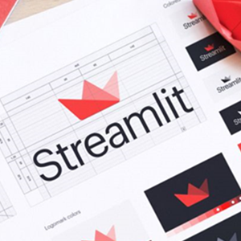
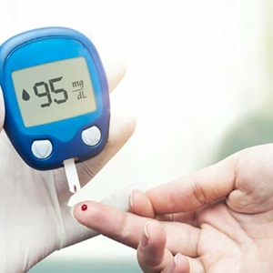

Projetos
Spotify & Python & Data Science – Análise de Dados dos Álbuns do artista NexoAnexo
O projeto teve como objetivo realizar uma análise de dados dos álbuns do Spotify do artista NexoAnexo, passando pelas principais etapas de uma análise de dados. Sendo, coleta dos dados, pré-processamento, exploração e visualização dos dados. Por fim, após a análise ter sido finalizada, foi construida uma aplicação/dashboard com Python e inserindo a aplicação disponivel na web...
Veja Mais →

Análise Exploratória de Dados com Streamlit
Essa aplicação foi construída com Streamlit, framework do Python destinado a criação de aplicação/dashboard. A aplicação faz uma análise exploratória inicial dos dados através de métodos estatísticos e visualização de dados, também aproveitei para inserir algumas explicações estatísticas na aplicação...
Veja Mais →
Machine Learning para detecção do Câncer de Mama
Esse projeto de Data Science teve como objetivo construir um simples modelo de Machine Learning que fosse capaz de detectar o câncer de mama, principalmente em mulheres grávidas...
Veja Mais →
Manipulando e Tratando dados para gerar Indicadores á Empresa
O objetivo do projeto foi fazer o tratamento e manipulação dos dados de arquivos em XLSX e CSV da empresa Bemol, para gerar um único conjunto de dados em xlsx, que irá servir como relatório e indicador para a empresa...
Veja Mais →

Modelo Preditivo para Ocorrência de Diabetes
Com base no conjunto de dados do Instituto Nacional de Diabetes e Doenças Digestivas e Renaisé foi construido um simples modelo capaz de prever se uma paciente grávida tem ou não diabete, com base em certas medidas de diagnóstico incluídas no conjunto de dados...
Veja Mais →
O que não te contaram sobre o coronavírus: Uma Análise de Dados do Covid-19
Durante o mês de março, na China o número de casos recuperados já eram maiores do que o número de casos confirmados, entretanto, países como Estados Unidos e Coreia do Sul, ainda tinham seus número de casos de mortes maiores do que o de casos recuperados e para países como Canadá e Brasil, ainda era tudo muito novo...
Veja Mais →
Análise de Dados do Airbnb da cidade do Rio de Janeiro
A cidade do Rio de Janeiro no ano de 2020 esteve entre as três cidades mais procuradas para curtir o período carnavalesco, sendo 2 milhões de turistas esperados para curtir a maratona carnavalesca, logo a um crescimento na rede de hotelaria. Pensando nisso, foi feita uma análise exploratória dos dados de uma das maiores empresas hoteleira da atualidade, o Airbnb, utilizando o dataset disponibilizado pela própria empresa...
Veja Mais →